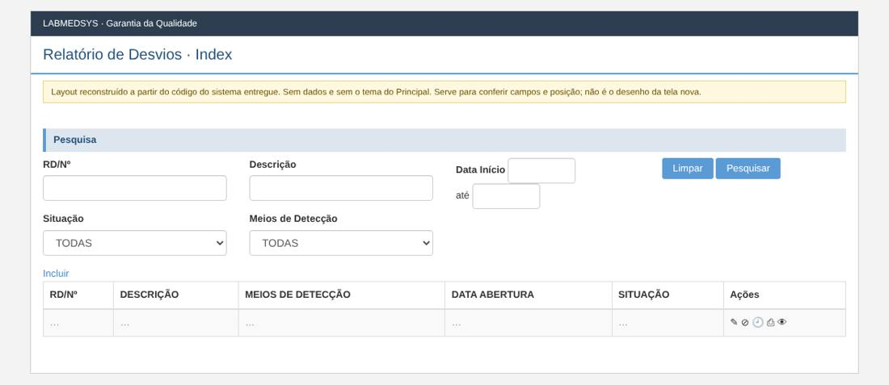
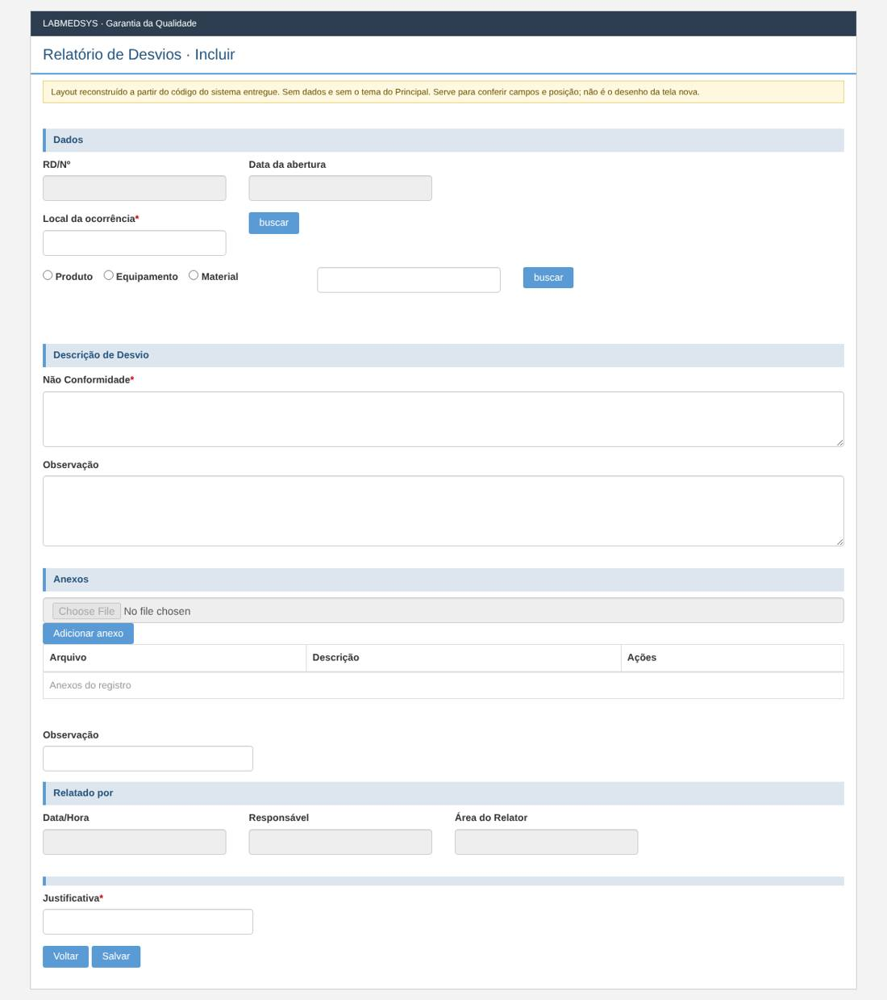
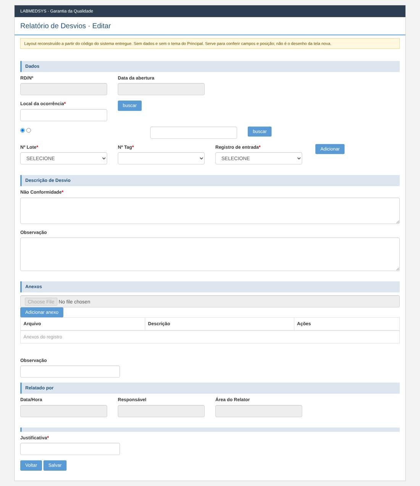
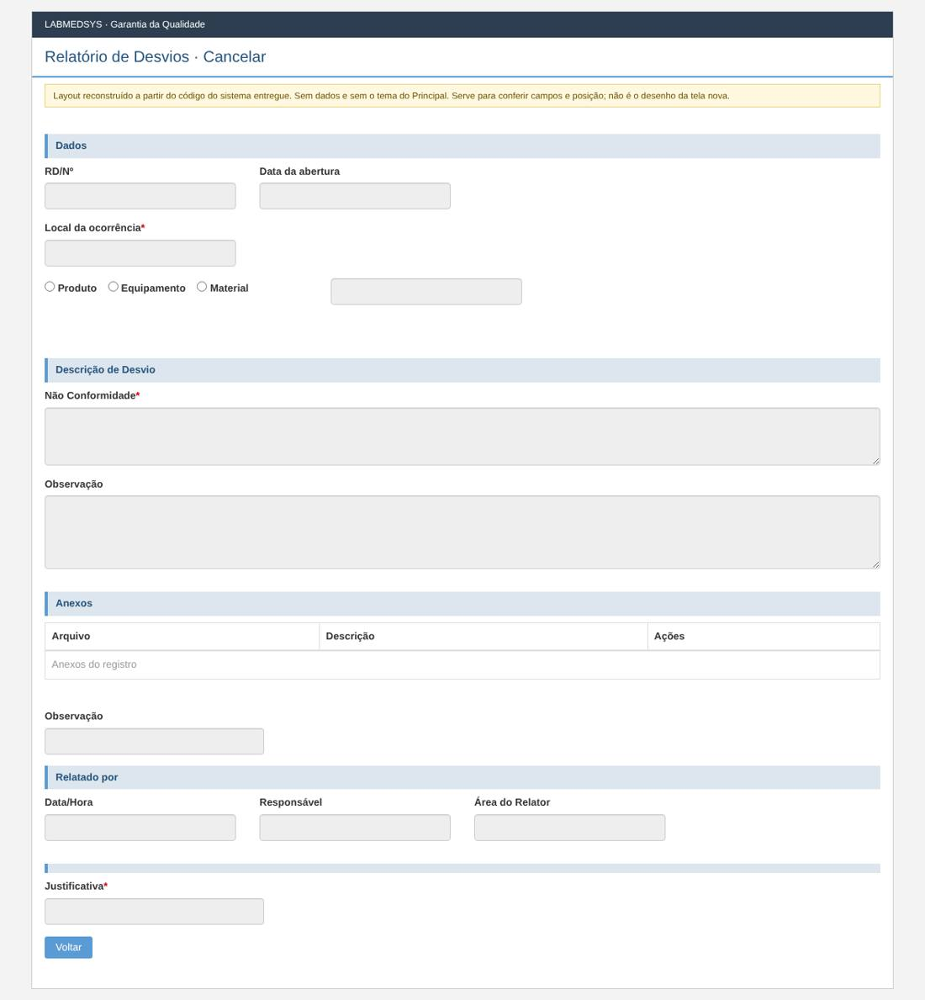
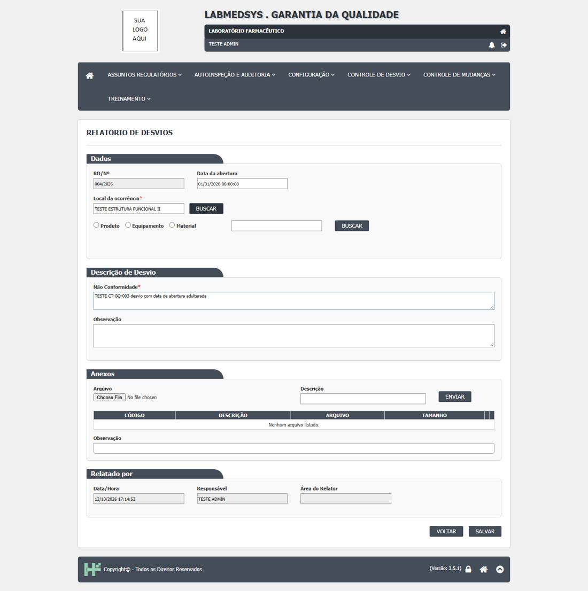
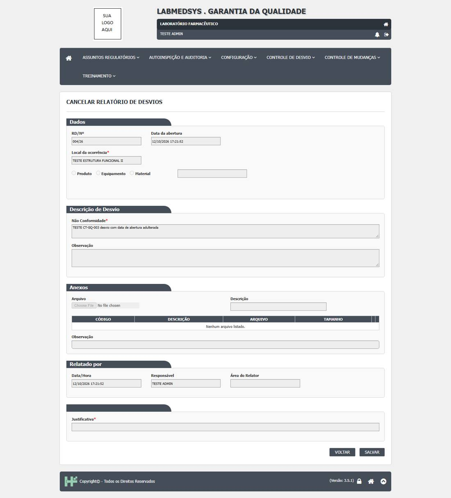

Menu: Garantia da Qualidade · Controle de Desvios · Ficha: completa, a validar com a Garantia da Qualidade · Origem no sistema entregue: RegistroNaoConformidade
As telas novas seguem o processo e as regras do sistema entregue, sem transcrever o que for falha de código, de conceito ou de campo mal colocado. Cada decisão na ficha é Manter, Corrigir ou Ideal depois.
Como é a tela no sistema entregue (layout reconstruído)
Reconstruído a partir do código das páginas do sistema entregue: mostra os campos, os rótulos, os asteriscos de obrigatório e a posição. Não tem dados e não usa o tema do Principal; os prints reais estão logo abaixo. Opções marcadas por padrão (caixas e botões de opção) são do código, não de dados.
Lista

Incluir

Editar

Visualizar
Cancelar

Prints reais do sistema entregue (testes de 12/10/2026)
Telas do ambiente de teste do sistema entregue, tiradas durante os casos de teste da GQ.
Caso CT-GQ-003

Caso CT-GQ-006

Ficha da tela nova
Regra de trabalho (decisão do responsável, 20/10/2026): a tela nova segue o processo e as regras do sistema entregue, com as ferramentas atuais, sem transcrever o legado sem analisar. Falha de código, de conceito ou de campo mal colocado é tratada. Função nova do ideal fica para depois. Cada decisão abaixo é marcada Manter, Corrigir ou Ideal depois.
1. Para que serve
É a porta de entrada do processo de desvio. Qualquer usuário da qualidade registra o que saiu do esperado (o Relatório de Desvios, RD): onde aconteceu, qual item foi afetado, a descrição e os anexos. O RD recebe um número sequencial do ano, no formato NNN/AA (por exemplo 001/26) e fica Pendente Registro Ação Corretiva para a próxima etapa. É daqui que sai o cancelamento do RD enquanto ele está nessa primeira etapa.
Lugar no processo: Relatório de Desvios → Registro Ação Corretiva Imediata → Pré Avaliação → Avaliação Área → Avaliação do Relatório → CAPA e planos.
2. Páginas da tela
| Página | O que mostra | Origem (legado) |
|---|---|---|
| Lista | Filtros e grade de RDs | Index.cshtml |
| Incluir | Formulário de um RD novo | Incluir.cshtml + _PartialRelatorioDesvio.cshtml |
| Editar | O mesmo formulário com o RD gravado | Editar.cshtml |
| Cancelar | O RD bloqueado para leitura, com pedido de justificativa | Cancelar.cshtml |
| Visualizar | O RD completo, somente leitura, com as fases já feitas | Visualizar.cshtml |
| Imprimir | PDF do RD (abre em nova aba) | RNCRelatorio |
O formulário é o mesmo componente usado por várias telas de Desvio, que mostram as seções das fases seguintes conforme a situação. Na tela nova ele vira um componente único com seções por fase; aqui só a seção "Relato" é editável.
3. Quem pode ver e fazer o quê
No legado (GerenciadorAcessoTelaRelatorioNaoConformidadeIndex.cs):
- Editar e Cancelar só aparecem enquanto a situação é Pendente Registro Ação Corretiva.
- O autor do RD sempre pode. Outro usuário: nível 1 não pode; nível 2 só se for da mesma área do autor; nível 3 e 4 podem (níveis do Grupo Perfil, RN-GQ-002).
- Visualizar, Histórico e Imprimir: qualquer usuário com grupo de perfil. Imprimir só depois que o RD tem número.
- A área do usuário vem do campo Divisão do cadastro dele no Principal (RN-GQ-149).
| Decisão | O que fazer |
|---|---|
| Manter | As regras acima (etapa, autor, nível e área). |
| Corrigir | Hoje só a lista esconde o botão; o servidor não confere ao abrir o formulário nem ao gravar (RN-GQ-003). Na tela nova o servidor aplica a mesma regra em toda ação (editar, cancelar, imprimir, ler). |
| Corrigir | A lista é montada sem filtrar por área, embora o código leia a área do usuário e não use (variável sem uso em Pesquisar). Confirmar com a GQ se todos veem todos os RDs; se sim, tirar a leitura inútil. |
4. Lista
Filtros:
| Campo | Tipo | Regra no legado | Decisão |
|---|---|---|---|
| RD/Nº | texto | Aceita número ou número/AA; procura o número contido no texto; o ano AA vira 20AA. |
Corrigir: buscar o número exato ou por prefixo, não "contém" (o 1 acharia 11, 21, 100…). |
| Descrição | texto | Contém. | Manter. |
| Data início / Data fim | data | Só início: traz só aquele dia; início e fim: de início até o dia seguinte de fim (inclui meia-noite do dia seguinte). | Corrigir: início e fim incluem os dois dias completos e nada mais; só início = "a partir de". |
| Situação | lista | Valores de TipoSituacao; "todas" = 0. |
Manter (lista só com as situações que o RD pode ter). |
| Meios de Detecção | lista | TipoMetodoDeteccaoNaoConformidade; "todos" = 0. |
Corrigir: o meio de detecção só é escolhido na Pré Avaliação (ficha 3), então este filtro fica vazio nas etapas 1 e 2. Tirar das telas 1 e 2 (validar com a GQ). |
| Botões | Limpar, Pesquisar | Manter. |
Grade: RD/Nº · Descrição · Meio de detecção · Data de abertura (dd/MM/aaaa) · Situação (rótulo do TipoSituacao). Ações por linha: Editar, Cancelar, Histórico, Imprimir, Visualizar, mostradas conforme a seção 3.
| Decisão | O que fazer |
|---|---|
| Corrigir | O legado carrega todos os RDs do banco e só depois recorta a página na memória (ToList() e Skip/Take). Na tela nova a paginação e o filtro rodam no servidor, com total de registros. |
| Corrigir | Excluir não existe de fato: no código a ação da grade se chama "Excluir" (iconExcluir) mas abre o cancelamento e o rótulo é "Cancelar". Na tela nova há só Cancelar, sem mistura de nomes. |
| Manter | RDs na lixeira não aparecem. Itens por página vêm de configuração. |
| Ideal depois | Fila "meus pendentes", alerta de prazo e filtros salvos. |
5. Formulário do RD (Incluir e Editar)
| Campo | Tipo | Obrig. | Regra e origem | Decisão |
|---|---|---|---|---|
| RD/Nº | texto, só leitura | — | Hoje o número é mostrado ao abrir a tela (próximo da sequência) e gerado de novo ao gravar; dois usuários podem ver o mesmo número e gravar números diferentes. | Corrigir: na inclusão mostrar "gerado ao gravar"; o número sai só no servidor, único por ano. |
| Data da abertura | data e hora, só leitura | — | O legado mostra a data da tela e o servidor usa o valor enviado (DateTime.Parse(model.DataRD)). Na prática gravou a do servidor (CT-GQ-003, ressalva), mas o código aceita a da tela (RN-GQ-007). |
Corrigir: sempre a hora do servidor, ignorando o que vier da tela. |
| Responsável / Área do responsável | texto, só leitura | — | O usuário logado e a área dele, na inclusão. Nos testes reais a "Área do Relator" aparece vazia: a área vem do campo Divisão do cadastro do usuário no Principal (RN-GQ-149) e estava sem preenchimento; sem área, as regras por área não funcionam (validar: a Divisão passa a ser obrigatória para quem usa a GQ?). Na edição, o legado troca o responsável pelo usuário que editou. | Corrigir: na edição, o autor continua o autor; quem editou fica no histórico. |
| Local da ocorrência | texto + busca | Sim | Mínimo 3 letras; abre lista (código e nome) das áreas do Principal; grava o código e o nome. Servidor recusa se o código for 0 ("Local de Ocorrência é obrigatório."). | Manter. Corrigir: não deixar digitar um nome sem escolher da lista. |
| Tipo do item | opções | Sim (de fato) | Só três opções: Equipamento, MP ou ME (material), Produto, apesar de o cadastro ter outros tipos. Não há validação no servidor. | Manter os três. Corrigir: obrigar a escolha e validar no servidor. |
| Item | texto + busca | Sim (de fato) | Mínimo 3 letras. Produto: busca produto e lote pela Produção. Material: busca no Estoque. Equipamento: busca no Principal (e o TAG). Na visualização real de um RD de equipamento aparece só a descrição do item, sem o TAG: mostrar o TAG. Trocar o tipo apaga os lotes já escolhidos. | Manter. Corrigir: validar no servidor que o item foi escolhido. |
| Nº Lote, Registro de entrada, Adicionar | listas e botão | * em todos |
Os três aparecem com asterisco sempre, mas valem por tipo: Lote para Produto e Material, Registro de entrada para Material, Nº Tag para Equipamento. | Corrigir: mostrar e exigir só o que vale para o tipo do item (campo mal colocado). |
| Lista de lotes do item | grade | — | Cada lote com registros de entrada. O servidor copia o número e a descrição do lote como texto; não confere se existe, nem liga ao Estoque (RN-GQ-012). O código que grava os lotes agrupa mal: repete o mesmo lote para cada registro e, na edição, reaproveita um lote já criado para lotes diferentes. | Corrigir: gravar lote e registros agrupados, sem duplicar e sem misturar, e validar que o lote existe na origem. Ideal depois: o desvio travar ou avisar o lote nos outros módulos (CT-GQ-014, DV-GQ-010). |
| Não Conformidade (descrição) | texto longo | Sim | "Descrição é obrigatória." Também aparece como "Descrição de Desvio" na seção. | Manter a regra. Corrigir: um só nome na tela e no menu: Descrição do desvio. |
| Observação | texto longo | Não | Manter | |
| Observação do anexo | texto | Não | A tela real tem duas caixas "Observação" (uma na descrição do desvio, outra embaixo dos anexos). A de baixo vale para todos os anexos juntos. | Corrigir: nome claro, Observação do anexo. |
| Anexos | envio, lista | Não | Se houver anexo, arquivo e descrição são obrigatórios. Anexos novos ficam guardados na sessão do usuário até gravar; excluir marca como excluído (lixeira) e guarda quem e quando. | Manter as regras. Corrigir: envio do arquivo direto ao servidor, sem depender de sessão; limites de tamanho e de tipo definidos. A tabela real tem as colunas Código, Descrição, Arquivo, Tamanho e o ícone de abrir; o Tamanho aparece em bytes sem formato (por exemplo 1027421): mostrar em KB ou MB. |
| Justificativa | texto | Só na edição | "Justificativa é obrigatória." quando o RD já existe e a situação não é Cancelada. Na tela real a caixa "Justificativa*" aparece com asterisco também na inclusão e na visualização (o RD novo mostra o texto digitado), mas o servidor só exige na edição. | Manter a regra. Corrigir: não mostrar a caixa na inclusão; na visualização mostrar a última justificativa como informação, sem asterisco. |
Nomes na tela (campo mal colocado/conceito): o legado mistura RD, RNC, RNCN, Desvio e Não Conformidade para a mesma coisa. Na versão nova: Relatório de Desvios (RD) em todo lugar. O número é RD/Nº. Confirmar com a GQ se RNC e RD são o mesmo documento.
6. Ações e regras
| Ação | O que acontece | Decisão |
|---|---|---|
| Incluir | Valida; gera o número; guarda data, autor e área; situação = Pendente Registro Ação Corretiva; grava o histórico de inclusão; mensagem "Inclusão efetuada com sucesso." | Manter. |
| Editar | Só na situação Pendente Registro Ação Corretiva (seção 3). Exige justificativa; atualiza os campos, lotes e anexos; grava o histórico (valor antigo e novo); volta a mesma situação; mensagem "Alteração efetuada com sucesso." | Manter; Corrigir o responsável (seção 5) e conferir no servidor se a situação ainda permite editar (dois usuários ao mesmo tempo). |
| Cancelar | Pede a justificativa em janela; a situação vai a Cancelada; guarda quem, quando e a justificativa; "Justificativa é obrigatório, quando a situação é de cancelamento."; mensagem "Cancelamento efetuado com sucesso." | Manter. Corrigir: o cancelamento hoje não grava histórico (DV-GQ-001, CT-GQ-006): gravar. |
| Visualizar | Todas as seções preenchidas até a fase atual, tudo bloqueado. | Manter. |
| Imprimir | PDF do RD com as áreas envolvidas e, para equipamento, o TAG. Disponível depois que o RD tem número. | Manter. |
| Histórico | Janela com os eventos do RD (campo, valor antigo, valor novo, usuário, data, justificativa). | Manter. |
Confirmações do legado: "Confirma a inclusão do item?" ao salvar (também usada na edição). Corrigir o texto da edição ("Confirma a alteração do Relatório de Desvios?").
7. Situação e histórico
| Evento | Situação depois | Histórico |
|---|---|---|
| Incluir | Pendente Registro Ação Corretiva | Sim (inclusão) |
| Editar | Pendente Registro Ação Corretiva | Sim (campo a campo, com justificativa) |
| Cancelar | Cancelada | Hoje não; na tela nova, sim |
8. Mensagens (do servidor)
Entidade de domínio não pode ser nula. · Descrição é obrigatória. · Local de Ocorrência é obrigatório. · Justificativa é obrigatória. · Justificativa é obrigatório, quando a situação é de cancelamento. · O Anexo é obrigatório. (arquivo) · O Anexo é obrigatório. (descrição) · A Data de criação é obrigatória. · O Responsavel é obrigatório. · Inclusão efetuada com sucesso. · Alteração efetuada com sucesso. · Cancelamento efetuado com sucesso. · Ocorreu um erro inesperado. · Local ocorrência: digite no minímo 3 caracteres. · Item: digite no minímo 3 caracteres.
Corrigir os textos: "obrigatório" para "obrigatória" onde cabe, "Responsavel" para "Responsável", "minímo" para "mínimo", "Anexo é obrigatório" (que aparece para arquivo e para descrição) para "Informe o arquivo do anexo." e "Informe a descrição do anexo.", e as mensagens passam a apontar o campo.
9. Integrações
| Com | O que a tela lê | Onde |
|---|---|---|
| Principal | Usuário logado, área do usuário (Divisão), lista de áreas (local da ocorrência), equipamentos e TAG | AreaService, serviços do Principal |
| Produção | Produtos e seus lotes, por descrição ou número de lote | ProdutoService |
| Estoque | Itens (matéria-prima e material de embalagem) e lotes | EstoqueService |
| Anexos | Guarda de arquivos no diretório do servidor | AnexoController |
A tela só consulta os outros módulos; não escreve neles (RN-GQ-008).
10. Casos de teste de aceite
Do plano de testes da GQ: CT-GQ-001 (sem descrição e sem local), 002 (registrar com produto e lote, número e situação), 003 (data do servidor), 004 (editar com e sem justificativa e histórico), 005 (nível 1 de outra área não vê Editar), 006 (cancelar com justificativa e histórico), 007 (cancelar pela tela de Ação Corretiva Imediata). Casos novos desta ficha: número único com dois usuários ao mesmo tempo; editar fora da etapa (recusa no servidor); lote agrupado sem duplicar; filtro por datas e por número; paginação com muitos RDs; item e tipo obrigatórios.
11. Pontos para a Garantia da Qualidade validar
- Todos os usuários veem todos os RDs, ou só os da própria área (e níveis maiores)?
- RD e RNC são o mesmo documento? Qual nome vale?
- Os outros tipos de item que o cadastro tem (processo, formulação, projetos, metodologia analítica) ficam fora de propósito?
- O lote informado precisa existir no Estoque ou na Produção?
- Quem pode cancelar além do autor e do nível 2 da área?
- Tamanho e tipos de arquivo permitidos nos anexos.
12. Para a API (a confirmar com o contrato do desenvolvimento)
Operações necessárias: listar com filtros e paginação; obter por id (com permissões da pessoa sobre ele); criar; atualizar com justificativa; cancelar com justificativa; histórico; PDF; busca de áreas; busca de item por tipo (produto, material, equipamento) com lotes; envio, abertura e exclusão de anexo. Listas de valores: situação, meio de detecção, tipo de item.